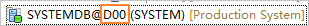

Before backing up and restoring the SAP HANA database, you must register the SAP HANA database with the product.
Procedure
- Choose Protection > Databases > General Databases.
- Click Register to register the SAP HANA database.
Table 1 lists the SAP HANA registration information.
Table 1 SAP HANA database registration information Parameter
Description
Type
Database type.
- For a tenant database, select Single Server or Distributed cluster.
- For a system database, select Single Server or Active/Standby cluster.
Name
Specifies the name of the database to be protected.
The name must be the same as the database name in the production environment. You can query the information on the SAP HANA Studio, as shown in the following figure.

Hosts
Host where the database resides.
If the database is deployed in a cluster, select all hosts where the database is distributed.
Database Type
Select SAP HANA.
Authentication Mode
Select Database authentication.
Database Username
Specifies the username and password of the database.
Database Password
Other Authentication Information
This parameter is required only when the database to be protected is a tenant database.
The format is as follows:systemDbUser=System database username,systemDbPassword=System database password
Customized Parameters
Set systemId and SQL Port of the database for successful registration.
- You can query systemId on the SAP HANA Studio, as shown in the following figure.

- SQL Port indicates the SQL port on the master node of the system database. You can query the SQL port on the SAP HANA Studio.
In single-tenant mode, the default value of SQL Port is 30015. In multi-tenant mode, the default value of SQL Port is 30013.
The format is as follows:
systemId=?,systemDbPort=?
Example:
systemId=D00,systemDbPort=30015
- Click OK.